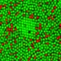

Nucleation
Crystallisation is among the most common everyday physical phenomena. Yet in the principle material in which quantitative comparison has been made between experiment and theory hard spheres predictions of crystal nucleation rates are up to 20 orders of magnitude slower than measurements, the "second worst prediction in physics" [1].

This discrepancy casts doubt upon the theoretical methods concerned importance sampling which is important not only for crystallisation, because these methods are used to tackle a very wide range of problems, such as drug uptake in cells and chemical reaction pathways. While particle-resolved studies reveal in intimate detail local mechanisms of structural change, they can only access rather fast crystallisation, where there is no discrepancy [2]. However gravitational sedimentation may influence the local structure of the colloidal liquid, which we show can drastically alter crystallisation [3]. We further image nano-particles with STED "nanoscopy", whose timescales are orders of magnitude faster than the larger colloids: thus by "rescaling time", we access new dynamical regimes where the massive discrepancy is found.
We have very recently found the first agreement for the free energy of formation of crystal nuclei in any material. This was achieved through a very careful mapping of state point between experiment and simulation 30 times more accurate than the state of the art. The free energy of formation is almost certainly the largest contribution to the nucleation rate discrepancy. We are now probing the source of possible errors in the earlier experiments.
References
- Taffs J, Williams SW, Tanaka H and Royall CP, Structure and kinetics in the freezing of nearly hard spheres, Soft Matter, 9, 297 - 305 (2013). Link to paper
- Taffs J and Royall CP, The Role of Fivefold Symmetry in Suppressing Crystallization. Nature Communications 7 (2016). Link to paper
- Wood N, Russo J, Turci F, and Royall CP. Coupling of Sedimentation and Liquid Structure: Influence on Hard Sphere Nucleation. The Journal of Chemical Physics (2018) Link to paper
- Gispen W, Coli GM, van Damme R, Royall CP and Dijkstra M, "Crystal polymorph selection mechanism of hard spheres hidden in the fluid", ACS Nano, 17 8807–8814 (2023). link to PDF
- Royall CP, Charbonneau P, Dijkstra M, Russo J, Smallenburg F, Speck T and Valeriani C, "Colloidal Hard Spheres: Triumphs, Challenges and Mysteries", Rev. Mod. Phys. 96 045003 (2024)[cite: 3] PDF download.
- Royall CP, "Polymorph selection in charged colloids in the second nucleation step", J. Chem. Phys. 164 024907 (2026) PDF download.
-
Kürten L, Castagnède A, Smallenburg F and Royall CP,
"Narrowing down the cause of the hard-sphere nucleation discrepancy: The free energy of precritical nuclei is consistent with predictions", Science Advances 12 eaec8906 (2026)
Link to journal (open access).